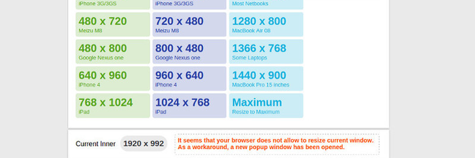
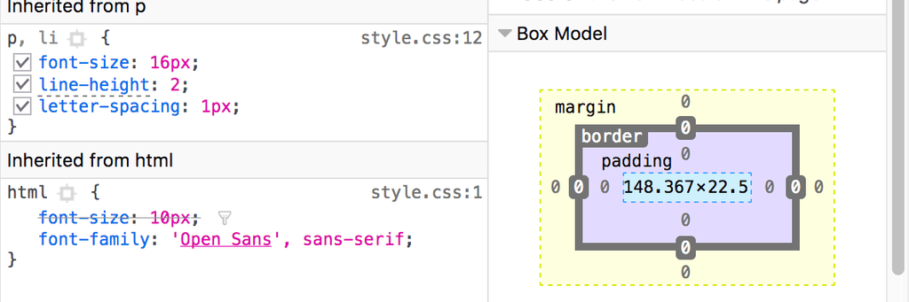

Una vez implementado el diseño responsivo, es crucial realizar pruebas exhaustivas para garantizar que la aplicación web funcione correctamente en una variedad de dispositivos y navegadores. Las pruebas deben incluir la verificación de la adaptabilidad del diseño, la funcionalidad de los elementos interactivos y el rendimiento general del sitio. Algunas herramientas serian: Resize My Browser, Design Modo's Test, Herramientas de desarrollo del navegador.
Resize my Browser"Resize My Browser" es una herramienta o función que te permite ajustar manualmente el tamaño de la ventana de tu navegador para probar cómo se ve un sitio web en diferentes dimensiones de pantalla. Esto es especialmente útil para diseñadores y desarrolladores que desean verificar la responsividad de un sitio web en dispositivos móviles, tablets y escritorios. |
 |
DesignmodoDesignmodo ofrece una herramienta gratuita para probar el diseño responsivo de sitios web, conocida como ViewPorter. Esta herramienta permite a los desarrolladores y diseñadores verificar cómo se visualiza su sitio en diferentes tamaños de pantalla y dispositivos, asegurando una experiencia de usuario óptima en diversas plataformas. |
|
Herramientas de desarrollo del navegadorLas herramientas de desarrollo integradas en los navegadores web son esenciales para diseñadores y desarrolladores que buscan crear aplicaciones web responsivas y optimizadas. Estas herramientas permiten inspeccionar, depurar y modificar en tiempo real el código fuente de una página web, facilitando la identificación y solución de problemas de diseño y funcionalidad. |
 |